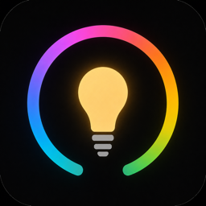

Support
Hue Remote for Apple Watch
Setup and troubleshooting for the iPhone and Apple Watch apps.
Getting Started
- Connect your iPhone or Apple Watch to the same Wi-Fi network as the Hue Bridge.
- Find and select the bridge, press its large round link button, then choose Connect Bridge.
- Sign in to a Hue account on iPhone if you want control outside the home network.
- Open Hue Remote on Apple Watch, then synchronize once from the iPhone companion app. Bridge and remote-access information are transferred together.
Troubleshooting
If a bridge is not found, confirm that local-network access is allowed and try entering its IP address manually. Keep the Apple Watch app open during synchronization. Remote control requires a connected Hue account and an internet connection.
Contact
If you need help or want to report an issue, contact edman.build@gmail.com.
Development updates: X @Edmanbuilds.